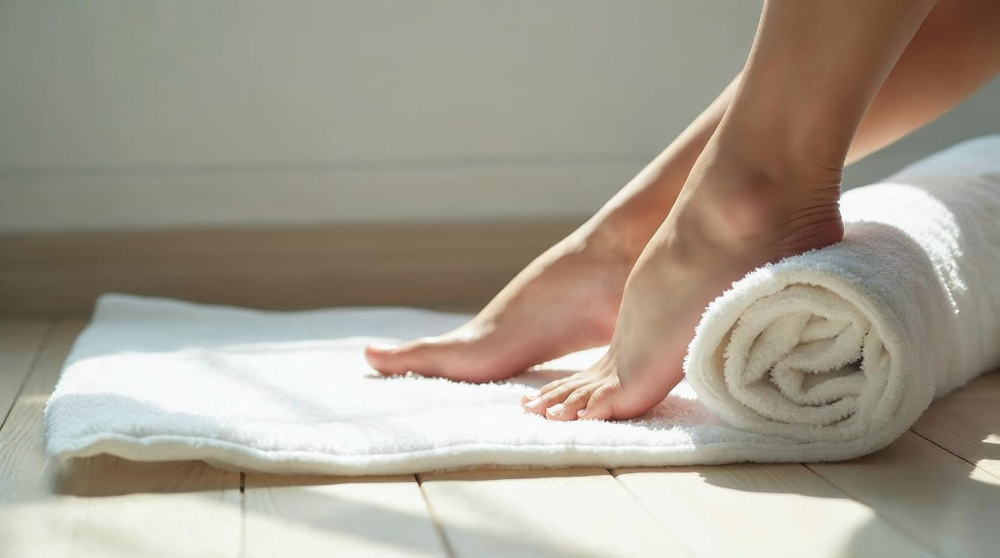
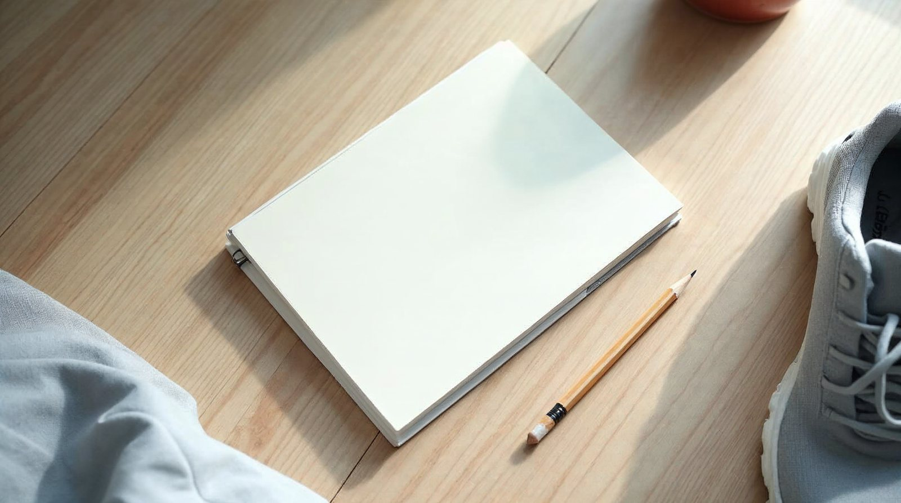

체외충격파는 몸 밖에서 아픈 부위로 충격파 에너지를 전달하는 방법입니다. 좋은꿈참사랑한의원은 불편한 동작을 먼저 듣고 예민한 지점을 찾아 시간과 강도를 조금씩 조절하며, 필요할 때 침·약침·추나와 이어서 씁니다.
언제쯤 상담을 받아 보면 좋을까요
- 많은 분이 "이 정도로 와도 되나요?" 하고 조심스럽게 물으십니다.
- 아침에 몇 걸음 걸으면 풀리고, 쉬면 괜찮고, 그러니 병원 가기엔 애매하다고요.
체외충격파는 어떤 진료인가요
- 체외충격파는 몸에 칼을 대지 않고, 몸 밖에서 아픈 부위로 기계적인 에너지를 전달하…
- 이름 그대로 '몸 밖(체외)'에서 '충격파'를 보내는 것이지요.
왜 이런 통증은 오래갈까요
- 체외충격파를 상담하러 오시는 분들의 통증에는 공통점이 있습니다.
- 대개 오래되었고, 같은 동작에서 반복됩니다.
왜 아픈 한 점이 아니라 주변까지 넓게 볼까요
- "여기요, 딱 여기가 아파요" 하고 손가락 하나로 짚어 주시는 분이 많습니다.
- 저도 그 자리부터 봅니다.

아침에 침대에서 내려와 첫발을 딛는 순간, 발뒤꿈치가 찌릿해서 벽을 짚게 되는 날이 있습니다. 몇 걸음 걷다 보면 좀 풀리니까 '괜찮아지겠지' 하고 넘깁니다. 마우스를 쥐는 오른쪽 팔꿈치가 시큰한 것도, 머리를 감으려고 팔을 들 때 어깨가 턱 걸리는 것도 그렇게 몇 달을 넘기십니다. 그러다 어느 날 문득, 이게 왜 안 낫지 싶어 진료실 문을 여십니다.
진료실에서 이런 말씀을 자주 듣습니다. "충격파 그거 엄청 아프다던데요." "몇 번이나 다녀야 해요? 회사 다니면서 시간 내기가 어려워서요." 아픈 것도 싫고, 시간 쓰는 것도 부담스러운 그 마음이 저는 충분히 이해됩니다.
그래서 체외충격파가 어떤 진료인지, 받을 때 실제로 어떤 느낌인지, 누구는 조심해야 하는지 진료실에서 말씀드리는 그대로 적어 보겠습니다.
언제쯤 상담을 받아 보면 좋을까요
많은 분이 "이 정도로 와도 되나요?" 하고 조심스럽게 물으십니다. 아침에 몇 걸음 걸으면 풀리고, 쉬면 괜찮고, 그러니 병원 가기엔 애매하다고요. 그 마음 잘 압니다. 저도 제 몸이 아플 때는 '좀 더 지켜보자' 하고 미루곤 하니까요.
다만 같은 동작에서 아픈 일이 몇 주 넘게 반복된다면, 혹은 쉬면 괜찮다가 다시 움직이면 꼭 같은 자리가 아프다면 한번 살펴볼 때가 되었다고 말씀드립니다. 통증 때문에 걷기, 계단, 집안일 같은 일상이 불편해졌다면 더 미루지 않으셨으면 합니다. 오셔서 충격파가 맞지 않는다는 이야기를 들으셔도 괜찮습니다. 무엇이 맞는지를 알아 가는 것부터가 시작입니다.
체외충격파는 어떤 진료인가요
체외충격파는 몸에 칼을 대지 않고, 몸 밖에서 아픈 부위로 기계적인 에너지를 전달하는 방법입니다. 이름 그대로 '몸 밖(체외)'에서 '충격파'를 보내는 것이지요. 주로 힘줄과 인대가 뼈에 붙는 자리, 오래 뭉친 근육이나 근막 주변처럼 통증이 쉽게 가라앉지 않는 부위에 상태를 보고 적용을 검토합니다.
좋은꿈참사랑한의원에는 제우스와 한일티엠, 두 종류의 체외충격파 장비가 있습니다. 같은 충격파라도 부위의 깊이와 넓이, 그날의 예민한 정도에 따라 맞는 장비가 다를 수 있어서, 진찰한 뒤 어느 장비로 할지 고릅니다.
장비가 두 대라고 말씀드리면 더 좋은 장비가 따로 있느냐고 물으시는 분도 계십니다. 그런 건 아닙니다. 연필과 붓처럼 쓰임이 조금 다를 뿐입니다. 결국 중요한 건 기계보다 그 기계를 어디에 대느냐, 얼마나 세게 대느냐를 판단하는 일이라고 저는 생각합니다.

왜 이런 통증은 오래갈까요
체외충격파를 상담하러 오시는 분들의 통증에는 공통점이 있습니다. 대개 오래되었고, 같은 동작에서 반복됩니다. 마우스와 스마트폰, 계단, 무거운 짐처럼 같은 동작을 오래 되풀이하다 보면 힘줄이 붙는 자리에 부담이 조금씩 쌓입니다. 나이가 들며 힘줄의 탄력이 줄면 작은 부담에도 예민해지고요.
운동을 새로 시작하거나 걷는 거리를 갑자기 늘린 뒤에 아프기 시작했다는 분도 많습니다. 발바닥은 체중과 오래 서 있는 일, 바닥이 얇은 신발이 겹쳐서 부담을 받습니다. 어깨는 힘줄 안에 석회가 생긴 경우도 있어서, 이럴 때는 영상으로 확인하는 과정이 필요할 수 있습니다.
힘줄은 근육보다 피가 덜 드나드는 조직이라 한번 예민해지면 회복에 시간이 걸리는 편입니다. 쉬면 좀 낫다가 다시 쓰면 아프고, 그러면서 몇 달이 지나갑니다. 그 사이 얼마나 답답하셨을까 싶습니다. 아픈 손으로 일하고, 아픈 발로 출근하는 일은 생각보다 사람을 많이 지치게 하니까요.
왜 아픈 한 점이 아니라 주변까지 넓게 볼까요
"여기요, 딱 여기가 아파요" 하고 손가락 하나로 짚어 주시는 분이 많습니다. 저도 그 자리부터 봅니다. 그런데 거기서 끝내지 않고 위아래, 옆으로 손을 옮겨 가며 눌러 봅니다. 아픈 자리와 그 아픔에 영향을 주는 자리가 꼭 같지는 않기 때문입니다.
팔꿈치가 아프신데 아래팔 근육이 잔뜩 굳어 있는 경우가 있고, 발뒤꿈치가 아프신데 종아리가 돌처럼 단단한 경우도 있습니다. 이런 주변 상태를 같이 보면 충격파를 어디에 얼마나 할지, 그리고 다른 진료를 함께 할지를 정하는 데 도움이 됩니다. '어디에, 얼마나'를 판단하는 일이 충격파에서 가장 중요하다고 제가 거듭 말씀드리는 이유이기도 합니다.
이런 분들이 상담을 많이 하십니다
팔을 들 때마다 어깨가 걸리고 밤에 쑤셔서 깨는 분, 키보드와 마우스를 오래 써서 팔꿈치 바깥쪽이 시큰한 분, 아침 첫걸음에 발뒤꿈치가 아픈 분이 많이 오십니다. 손목을 많이 쓰는 일을 하시는 분, 오래된 근육·힘줄 부위 통증으로 고생하시는 분도 계십니다.
예를 들어 팔꿈치가 아프다고 오신 분이라면, 저는 손목을 비트는 동작부터 해 보시게 하고 아픈 자리 주변까지 넓게 눌러 봅니다. 발뒤꿈치가 아프신 분은 발바닥과 종아리를 함께 살피고, 필요하면 초음파로 근막 주변을 확인한 뒤 치료 부위를 정합니다. 어깨에 석회가 의심되면 충격파 이야기보다 영상 확인 이야기를 먼저 꺼냅니다.
이런 경우에는 먼저 알려 주세요
체외충격파는 누구에게나 바로 하는 진료가 아닙니다. 아래에 해당하면 하지 않거나 아주 신중하게 판단하니, 진료 전에 미리 말씀해 주세요.
- 임신 중이거나 임신 가능성이 있는 경우
- 심장박동기 등 몸 안에 넣은 기기가 있는 경우
- 혈액을 묽게 하는 약을 드시거나 피가 잘 멎지 않는 경우
- 치료할 부위에 피부 감염, 상처, 종양이 있거나 있었던 경우
- 치료할 부위에 최근 주사 치료를 받은 경우
이 가운데 몇 가지는 제가 여쭙기 전에 환자분이 먼저 떠올리기 어려운 것들입니다. 특히 드시는 약은 이름이 기억나지 않으면 약 봉투나 처방전을 사진으로 찍어 오셔도 충분합니다.
처음 오셔서 이 목록을 보고 "저는 혈압약만 먹는데 괜찮나요?" 하고 물으시는 분도 계십니다. 약마다 사정이 다르니 이름을 알려 주시면 함께 확인하겠습니다. 스스로 판단해서 괜찮겠지 하고 넘기시기보다, 애매하면 일단 말씀해 주시는 편이 저도 마음이 놓입니다. 몸 안에 넣은 기기도 마찬가지입니다.
오래전에 받은 시술이라 잊고 계셨던 것이 나중에 떠오르면, 다음 진료 전에라도 알려 주세요.

실제로 받으면 어떤 느낌인가요
이 질문을 제일 많이 받습니다. 솔직하게 말씀드리면, 예민한 자리에서는 불편할 수 있습니다. 장비를 대면 '따다닥' 하는 소리와 함께 그 부위를 두드리는 듯한 자극이 느껴집니다. 아프지 않은 자리에서는 그냥 진동처럼 느껴지다가, 문제가 있는 자리에 닿으면 '아, 거기요' 하고 몸이 먼저 반응하시곤 합니다.
그 반응이 저에게는 중요한 정보입니다. 받을 때 아픈 곳이 더 뚜렷하게 느껴지는 건, 그 자리가 지금 예민하다는 신호일 수 있거든요. 그래서 저는 처음에는 짧게, 약하게 시작해서 환자분이 느끼는 강도를 확인하며 시간과 세기를 조금씩 맞춥니다.
충격파는 아플수록 잘 듣는 거 아니냐고 참으시는 분이 계십니다. 그러지 않으셔도 됩니다. 강도가 높다고 더 좋은 것이 아니고, 너무 참으면 몸이 긴장해서 정확한 반응을 읽기도 어려워집니다. 불편하시면 바로 말씀해 주세요. 그 자리에서 조절하겠습니다.
치료 직후에는 그 부위가 얼얼하거나 뻐근하고, 붉어지거나 멍이 들 수 있습니다. 대개 며칠 안에 가라앉습니다. 그런데 통증이 오히려 심해지거나, 붓고 열이 나거나, 며칠이 지나도 가라앉지 않으면 기다리지 말고 바로 알려 주세요.
받는 동안 제가 자꾸 묻는 이유
충격파를 하는 동안 저는 말이 많은 편입니다. "지금 여기는 어떠세요?", "아까 그 자리보다 더 울리세요, 덜 울리세요?", "조금 옆으로 옮겨 볼게요, 여기는요?" 처음 받으시는 분들은 원장이 왜 이렇게 자꾸 묻나 싶으실 겁니다.
이유는 간단합니다. 제 손과 눈으로 찾은 자리와 환자분이 실제로 아프다고 느끼시는 자리가 조금씩 다를 때가 있기 때문입니다. 압통점을 눌러 찾고 초음파로 확인했더라도, 충격파가 닿는 순간 "아, 여기가 진짜예요" 하시는 자리가 따로 있을 때가 있습니다. 그 대답을 들으면 위치를 옮기고 세기를 다시 맞춥니다.
그렇게 찾은 자리는 기록해 두었다가 다음에 오셨을 때 다시 확인합니다.
그러니 "괜찮아요" 하고 참지 마시고 느끼시는 대로 말씀해 주세요. 덜 아프면 덜 아프다고, 더 울리면 더 울린다고요. 그 한마디 한마디가 제게는 지도가 됩니다.

부위마다 살피는 것이 조금씩 다릅니다
어깨가 아프신 분은 팔을 어느 높이까지 들 때 걸리는지, 옆으로 들 때와 앞으로 들 때가 다른지부터 봅니다. 밤에 아픈 쪽으로 눕기 힘드신지도 여쭙습니다. 어깨 힘줄 안에 석회가 의심되면 영상으로 확인하는 일을 먼저 이야기합니다.
팔꿈치는 손목을 비틀거나 물건을 쥘 때, 문고리를 돌릴 때처럼 손을 쓰는 동작에서 아픈 경우가 많습니다. 그래서 팔꿈치만 보지 않고 손목과 아래팔 근육까지 함께 눌러 봅니다. 하루에 마우스나 공구를 얼마나 오래 쓰시는지도 꼭 여쭙습니다.
발바닥은 아침 첫걸음이나 오래 앉아 있다 일어설 때 아픈지, 하루 중 언제 심한지를 듣습니다. 발뒤꿈치만이 아니라 발바닥 전체와 종아리까지 살피고, 평소 신는 신발과 하루에 서 있는 시간도 함께 봅니다. 같은 충격파라도 이렇게 부위마다 묻는 것과 보는 것이 다르기에, 처음 오신 날은 이야기를 듣는 데 시간을 좀 쓰는 편입니다.
시간 내기 어려운 분께 드리는 말씀
회사 다니면서, 아이 키우면서 진료 시간을 따로 내는 일이 얼마나 빠듯한지 잘 압니다. 그래서 저는 처음부터 "몇 주 동안 몇 번" 하는 식으로 일정을 정해 드리기보다, 한 번 받고 난 뒤의 반응을 보고 다음 일정을 함께 정하자고 말씀드립니다.
치료 뒤 며칠 동안 어떠셨는지, 같은 동작에서 달라진 점이 있는지를 들으면 다음에 언제쯤 오시는 게 좋을지 이야기할 수 있습니다. 반응이 충분하지 않다면 계속 같은 걸 반복하기보다 방법을 바꾸는 쪽을 고민합니다. 평일 저녁이나 주말 진료 시간도 있으니, 진료 시간은 방문 전에 전화로 확인해 주세요.
충격파가 끝나고 침대에서 일어나실 때, 저는 아까 아프다고 하셨던 동작을 한 번 더 해 보시라고 부탁드립니다. 팔을 들어 보시거나, 몇 걸음 걸어 보시거나, 손목을 돌려 보시는 거지요. 그 자리에서 무언가 크게 달라지길 기대해서가 아닙니다. 오늘의 기준을 함께 확인해 두려는 것입니다.
진맥과 체외충격파, 그리고 다른 진료와의 연결
발이 아파서 왔는데 원장이 왜 손목을 짚느냐고 웃으시는 분도 계십니다. 저는 처음 뵙는 분이면 맥을 짚고, 혀를 보고, 말씀을 듣고, 손으로 몸을 살핍니다. 같은 힘줄 통증이라도 잠을 잘 못 주무시는지, 소화는 괜찮은지, 요즘 많이 지쳐 계신지에 따라 몸이 회복할 여유가 다를 수 있다고 보기 때문입니다.
체외충격파만 하는 날도 있고, 상태에 따라 침이나 약침, 추나와 이어서 쓰는 날도 있습니다. 침은 경혈과 근육에 직접 자극을 주고, 충격파는 몸 밖에서 에너지를 전달합니다. 하나만 할지 함께 할지는 그날 진찰을 보고 정합니다. 많이 받는다고 좋은 것이 아니라 오늘 상태에 맞는 걸 고르는 게 중요하다고 저는 늘 말씀드립니다.
첫 방문은 이렇게 진행됩니다
처음 오시면 "어디가 아프세요?"보다 "어떤 동작에서 불편하세요?"를 먼저 여쭙습니다. 아침 첫걸음인지, 팔을 들 때인지, 손목을 비틀 때인지요. 언제부터 아팠는지, 그동안 받은 치료나 주사가 있는지, 밤에도 아프거나 쉬어도 가라앉지 않는지, 드시는 약과 몸 안에 넣은 기기가 있는지도 확인합니다.
그다음 아픈 한 점만 보지 않고 주변까지 넓게 눌러 보며 압통점을 찾습니다. 필요하다고 판단되면 초음파로 힘줄과 주변 조직 상태를 함께 보고, 주요 치료 부위를 정해 기록합니다. 기록해 두는 이유는 단순합니다. 다음에 오셨을 때 같은 자리, 같은 동작으로 다시 비교해 보려고요.
모든 분께 같은 횟수와 강도를 적용하지 않습니다. 몇 번 받아야 하느냐고 물으시면 저는 미리 숫자를 약속드리지 않습니다. 부위와 반응에 따라 다르기 때문입니다. 대신 진료 때마다 같은 동작으로 달라진 점을 확인하고, 반응이 충분하지 않으면 방법을 바꾸거나 다른 의료기관 진료를 함께 검토하자고 말씀드립니다.
적용 대상과 비용, 건강보험 적용 여부는 진찰 후 안내해 드립니다.
충격파가 맞지 않을 수도 있습니다
충격파를 받으러 오셨는데 제가 다른 이야기를 먼저 꺼낼 때가 있습니다. 다친 지 얼마 안 되어 붓고 뜨거운 상태라면, 충격파보다 먼저 다친 정도를 확인하고 쉬게 하는 일이 우선입니다. 저림이나 힘 빠짐이 같이 있다면 힘줄보다 신경 쪽을 먼저 살펴야 할 수도 있습니다. 앞에서 말씀드린 조심해야 할 경우에 해당하시면 충격파는 하지 않거나 다른 방법을 찾습니다.
몇 차례 받으셨는데 같은 동작에서 변화가 뚜렷하지 않을 때도 솔직하게 말씀드리겠습니다. 그럴 때는 같은 걸 계속 반복하기보다 방법을 바꾸거나, 영상 검사가 가능한 의료기관 진료를 함께 검토합니다. 충격파는 여러 방법 가운데 하나일 뿐이고, 환자분께 맞는 길을 찾는 게 먼저라고 저는 생각합니다.

받고 난 뒤, 집에서 함께 해 주실 일
충격파를 받은 날은 그 부위로 무리한 운동이나 무거운 짐 들기를 피해 주세요. 그리고 통증을 부르는 동작의 횟수부터 줄여 보세요. 오래 서 있기, 손목을 반복해서 비틀기처럼 이미 아는 그 동작 말입니다. 발바닥이 아프다면 쿠션 있는 신발을 신고, 맨발로 오래 서 있지 않는 것부터 시작해 보세요.
아침에 첫발을 딛기 전에 침대에 앉아 종아리와 발바닥을 가볍게 풀어 주는 것도 권해 드립니다. 대단한 운동이 아니라 1~2분이면 됩니다. 저는 이런 작은 일이 치료실에서 하는 일만큼 소중하다고 생각합니다. 진료실에 계신 시간보다 집과 일터에 계신 시간이 훨씬 기니까요.
진료 사이에는 가장 아픈 동작 한두 가지와 그때의 통증 정도를 0~10점으로 적어 두시면 좋습니다. 치료받은 뒤 며칠 동안의 반응, 그러니까 얼얼함이나 붉어짐, 멍도 함께요. 1~2주 적어 오시면 다음 진료에서 무엇을 이어 갈지 함께 정하기가 훨씬 쉬워집니다.

기록을 이렇게 해 오시면 좋습니다
진료실에서 "지난번 받고 어떠셨어요?" 하고 여쭈면 "글쎄요, 좀 나은 것 같기도 하고…" 하고 말끝을 흐리시는 분이 많습니다. 당연합니다. 며칠 전 일을 정확히 기억하기란 누구에게나 어렵거든요. 그래서 거창한 일기가 아니라 휴대폰 메모장에 한 줄씩만 적어 오시라고 부탁드립니다.
적어 오시면 좋은 건 이런 것들입니다. 가장 아픈 동작과 그때의 통증 점수, 그 동작을 하루에 몇 번쯤 하셨는지, 치료받은 뒤 며칠 동안의 반응. 통증이 시작된 무렵 운동이나 신발, 업무가 달라졌다면 그것도 한 줄 남겨 주세요. 예전에 받은 주사나 다른 치료가 있었다면 대략의 시기도 함께요.
이런 기록이 쌓이면 환자분도 저도 감으로 이야기하지 않게 됩니다. "지난주엔 계단에서 7점이었는데 이번 주엔 5점이네요"라는 한 문장이, 다음 치료를 어디에 얼마나 할지 정하는 데 큰 힘이 됩니다. 변화가 없을 때도 그 기록이 방법을 바꿀 근거가 되어 줍니다.
이런 증상은 먼저 다른 의료기관에서 확인이 필요합니다
넘어지거나 부딪힌 뒤 갑자기 심한 통증과 붓기가 생겼다면, 충격파보다 골절이나 인대 손상 여부를 먼저 확인해야 합니다. 아픈 부위가 붉고 뜨거우며 열이 나는 경우, 저림이나 힘 빠짐이 함께 있는 경우, 밤에 쉬어도 가라앉지 않는 통증이 이어지는 경우에도 영상 검사가 가능한 의료기관에서 먼저 확인받으시기를 권합니다.
증상이 갑자기 심해졌다면 가까운 응급실로 가세요.
복용 중인 약은 처방한 의사와 상의 없이 줄이거나 끊지 마세요. 충격파를 받으려고 혈액을 묽게 하는 약을 스스로 끊는 일은 없어야 합니다. 그런 경우에는 저와 먼저 이야기하고, 필요하면 처방한 선생님과 상의해 주세요.
마치며
오래 아픈 곳이 있으면 처음엔 참고, 그다음엔 피하고, 나중엔 그냥 그렇게 사는 게 익숙해집니다. 계단 대신 엘리베이터를 타고, 아픈 손 대신 반대 손을 쓰면서요. 그렇게 버텨 오신 시간을 저는 가볍게 여기지 않습니다.
충격파가 무서워서 망설이신다면 그 걱정부터 들고 오세요. 약하게, 짧게 시작해서 환자분이 괜찮다고 하시는 만큼만 하겠습니다. 다음에 오시면 지난번 아팠던 그 동작이 요즘은 어떠신지부터 여쭙겠습니다.
함께 읽으면 좋은 글
- 아침에 첫발을 디딜 때 발바닥이 아프면 어떤 점을 살펴보나요?
- 계단을 내려갈 때 무릎이 아프면 한의원에서는 무엇을 먼저 묻나요?
- 같은 허리 통증인데 왜 사람마다 쓰는 장비가 다른가요?
자주 묻는 질문
체외충격파는 어떤 진료인가요?
몸 밖에서 아픈 부위로 충격파 에너지를 전달하는 방법입니다. 통증 부위를 넓게 살피고 시간과 강도를 조절하며, 필요하다고 판단될 때 침·약침·추나와 이어서 씁니다.
받을 때 아프지 않나요?
예민한 자리에서는 불편할 수 있습니다. 짧고 약하게 시작해 느끼시는 강도를 확인하며 조절하니 참지 말고 바로 말씀해 주세요.
체외충격파는 몇 번 받아야 하나요?
부위와 반응에 따라 달라 정해진 횟수를 미리 말씀드리지 않습니다. 진료 때마다 같은 동작으로 변화를 확인하고 다음 계획을 정합니다.
받으면 안 되는 경우도 있나요?
임신 중, 심장박동기 같은 몸 안의 기기, 혈액을 묽게 하는 약 복용, 치료 부위의 감염·상처·종양, 최근 주사 치료가 있으면 하지 않거나 신중히 판단합니다. 진료 전에 알려 주세요.
체외충격파로 살이 빠지나요?
아니요. 이 진료에서 쓰는 체외충격파는 힘줄·근막 부위 통증을 살펴 쓰는 방법이며, 체중이나 지방을 줄이려는 목적으로 쓰지 않습니다.
이 글은 일반적인 건강 정보이며 개인의 진단이나 치료를 대신하지 않습니다. 증상이 있거나 복용 중인 약이 있다면 진료를 통해 확인하세요. 치료 효과는 개인마다 다를 수 있습니다.
작성 기준: 일반적으로 알려져 있는 건강 정보를 참고해 정리했습니다(대표원장 감수). 증상 기록은 1~2주 동안 하루 1회, 비슷한 시간에 적어 오시면 지난 상태와 비교하기 쉽습니다.
좋은꿈참사랑한의원은 재진 때 지난번 이야기부터 이어서 여쭙니다. 진료시간과 예약은 오시는 길에서 확인하세요.
어디서 상담받을 수 있나요?
좋은꿈참사랑한의원은 서울 동작구 만양로2길 2 신성빌딩 3층·5층(서울 동작구 상도동, 7호선 상도역 3번 출구 근처)에 있습니다. 한의사 3명(이종호 대표원장, 조영기 수석진료원장, 정원영 진료원장)이 진료합니다. 진료시간은 평일 09:30~20:00(점심 13:00~14:00), 토·일·공휴일 09:30~15:00이며, 방문 전 전화로 확인을 권합니다. 예약은 네이버 예약, 카카오톡 상담, 전화 02-815-7510로 받습니다.